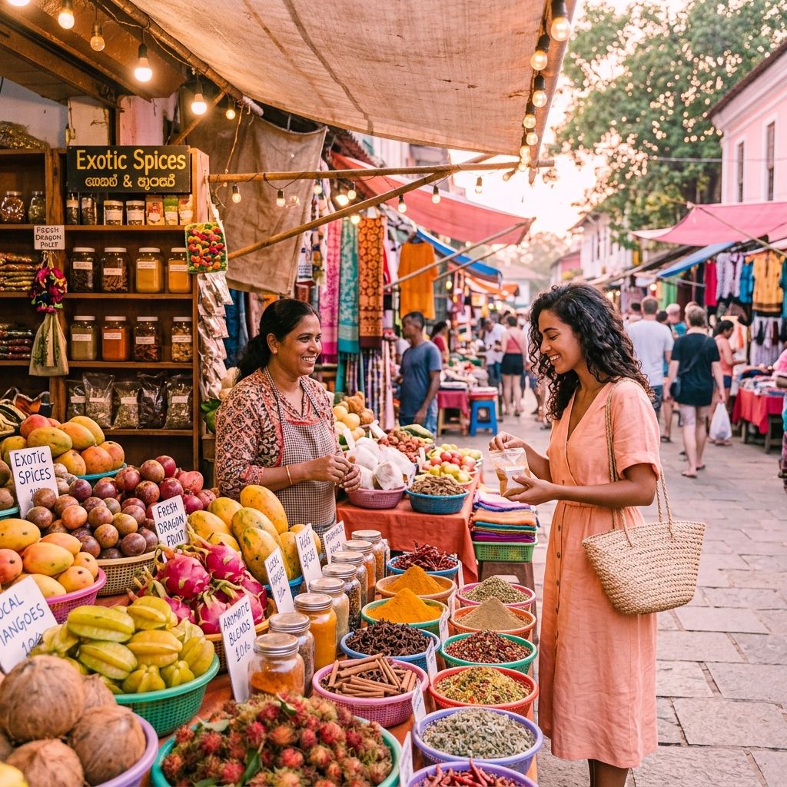

Destinos
Destinos
Las 10 Mejores Playas para Visitar este Verano
Descubre paraísos ocultos con aguas cristalinas y arena blanca. La guía definitiva para tus próximas vacaciones.
Acompáñanos en nuestras aventuras. Encuentra los mejores tutoriales de viaje, destinos increíbles y las últimas noticias del mundo del turismo.
Explorar Destinos
Destinos
Descubre paraísos ocultos con aguas cristalinas y arena blanca. La guía definitiva para tus próximas vacaciones.
 Noticias
Noticias
Las aerolíneas han abierto nuevas rutas económicas. Entérate de cómo aprovechar estos vuelos para tu próxima escapada.
 Tutoriales
Tutoriales
Aprende a presupuestar, encontrar vuelos baratos y comer increíble sin gastar una fortuna. Mi método personal revelado.
Gastronomía
Un recorrido gastronómico por los mejores puestos de comida en Tailandia, Japón y Vietnam. Sabores que no olvidarás.
Fotografía
Aprende a capturar la esencia de tus destinos con tu smartphone o cámara profesional usando reglas de composición.
Descubre cómo empacar de manera eficiente para viajes largos sin pagar extra por maletas facturadas.
 Destinos
Destinos
Descubre los picos más increíbles para tu próxima aventura de senderismo.

GastronomíaLos mercados son el corazón cultural de cualquier ciudad y la mejor forma de comer bien y barato.
Tutoriales
Conecta mejor con los locales aprendiendo frases clave antes de tu viaje.